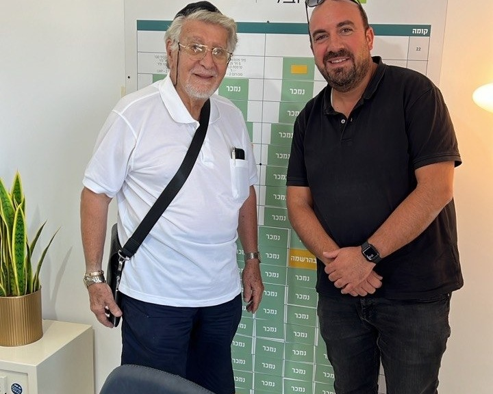
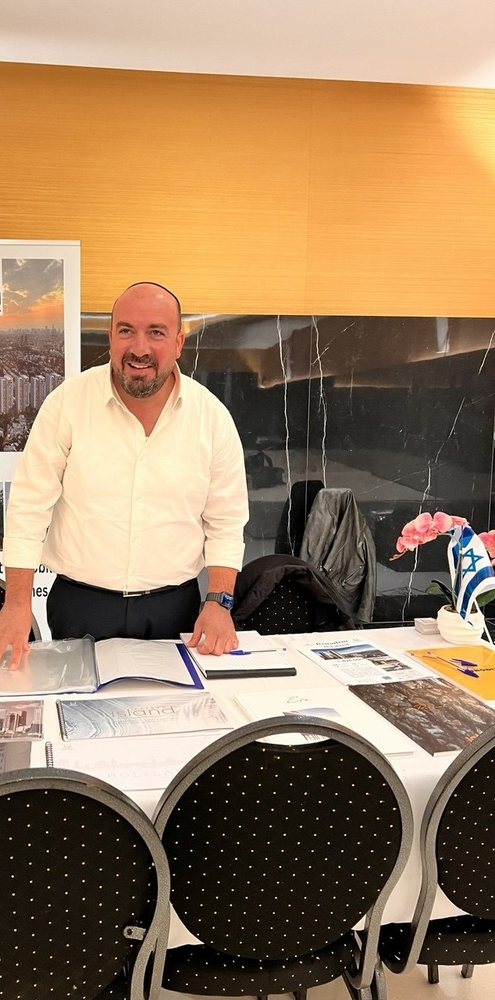

The developer’s price, not a penny more
Zero agency fees on your purchase: you sign at the price you would have got walking into the sales office yourself — except that we have already walked in.
Except that the price itself is negotiated
Discount, floor, aspect, kitchen, payment schedule: everything that can be argued over is argued over — in Hebrew, and before you get there.
The real cost, before you commit
Purchase tax, legal fees, the developer’s payment schedule, the monthly repayment: you get the full costing at the first meeting, not on the day you sign.
Our new developments
Hillel Bijaoui
Twelve years in Israeli real estate, most of them with developers, on the seller's side. I know how a price is built, what is truly negotiable, and what is never negotiable.
Today that knowledge works for you — and you pay no agency fee: I am paid by the developer, and you sign at the price negotiated before you ever arrive.
We follow 37 projects in 17 cities. You are not buying a floor plan on a screen: someone goes to the construction site, speaks Hebrew at the sales office, and stays with you until the keys are handed over, including the lawyer and the bank.
The first call costs nothing and does not commit you to anything.


Buying from abroad, without ever moving blind
We speak your language — and theirs
Developers negotiate in Hebrew. We go back and forth; you decide in your own language.
The price, and everything that is added
Acquisition tax, lawyer, bank, actual costs: the complete costing before you commit, not after.
The lawyer and the bank, before signing
The contract reviewed, the Israeli loan arranged, the payment schedule verified: this is where unpleasant surprises can arise, and it is included.
Your eyes on the ground
We go on site: photos, videos, a visit to the sales office. You see the development before you decide, and we follow the build through to handover.